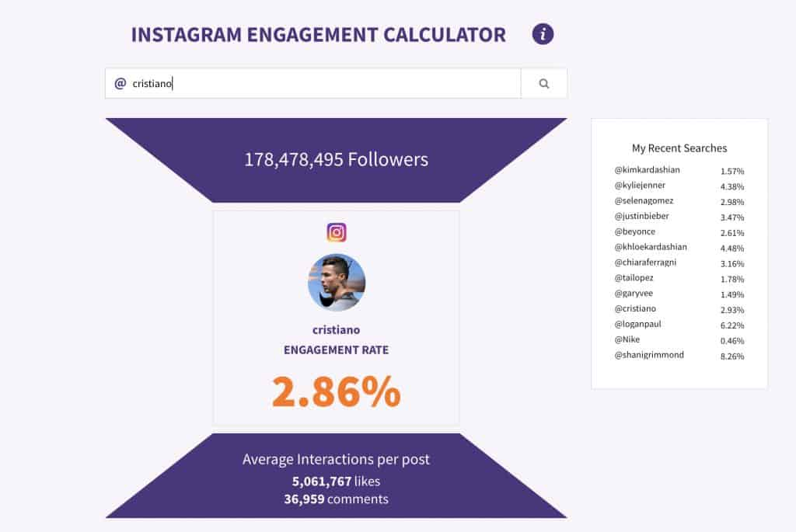

Having lots of followers can help you on Instagram, but your Instagram engagement rate is more important than ever. These days, Instagram isn’t so concerned with blind numbers as they are with how much you can get those numbers to actually interact with you. You may have heard reports of influencers with smaller followings being able to negotiate better brand deals than those with huge numbers, or brands doing the same thing.
So what exactly is Instagram engagement? With the algorithm constantly changing, it can be a headache for anyone trying to build their own following. Keep reading to find out exactly what your Instagram engagement rate is, how it affects your performance and strategies for maintaining it.
What’s My Instagram Engagement Rate?
Put simply, your Instagram engagement rate measures the number of followers you have against the actions they take on your posts. Every time you post and it leads to a like, a comment, or profile click, that contributes to your engagement rate. Instagram is basically looking to see that the people that follow you are actually real people and not amassed bots.
A good engagement rate for accounts with between 100k and 1 million followers is around 2%. Anything lower will tell brands that you’re buying followers, and they won’t want to work with you. If you’re a microinfluencer with between 1,000 and 5,000 followers, note that your ideal engagement rate is different: around 5%.
Maintaining a good engagement rate is crucial to influencer and brand success in 2019. Having a lot of followers is good, but having engaged followers is way more important.
How Do I Find Out My Instagram Engagement Rate?
Finding your Instagram engagement rate isn’t difficult at all. Although your insights can give you some….ahem…insight into the overall state of things on your account, they regrettably have no tool for calculating your engagement rate. Never fear. There is a mathematical formula you can use, if you like torturing yourself. But if you don’t have the time for that, or you don’t feel like going back to high school Algebra, just plug in your handle to Phlanx.com’s engagement calculator.

Using Instagram’s current King, Cristiano Ronaldo, as an example, we can see that he’s got a solid engagement rate of 2.86%. For as many followers as he has, that’s pretty impressive! If you’re concerned about your Instagram engagement rate, you can also use Phlanx.com to generate an Instagram audit and begin targeting fake followers.
Your Instagram engagement rate is a very important part of your Instagram journey, so keeping up with it diligently is a good idea. Let’s take a look at some strategies you can use to keep your followers engaged with your content:
Strategies for Maintaining Engagement Rates
If you’re starting to get stressed about maintaining your Instagram engagement rate, take a breath. If you’re not buying massive amounts of bot followers, it should actually come pretty easy to you. After all, people follow you for a reason! That being said, there are some definitive steps you can take to ensure that your engagement rate stays where it’s meant to be.
Make Sure Your Content Is Worthy
First and foremost, you should always be putting effort into your Instagram content. If your content isn’t interesting on its own, then your Instagram engagement rate will suffer. Not for any fault of Instagram or its algorithm, but rather because the content itself warrants no further interaction.
Thankfully, there are plenty of ways to make sure you’re creating fun, engaging, and interesting content nowadays. People LOVE interactive content, so take advantage of that! Whether you’re engaging with your followers through stories or posts, there are plenty of opportunities to get them in on the fun. Take advantage of the interactive Stories features like questions and polls as an easy way to boost your engagement rate.

Another easy way to get lots of engagement through profile clicks is to make your own Instagram stories templates. They’ll get passed around from person to person, guaranteeing people come back to your profile for the empty ones! And if you keep making them, your follower count will probably grow too.
Reach Out to Your Followers
The easiest way to know what your follower want is to ask them! With the aforementioned methods of getting their opinions directly through stories, you have a direct line to get their opinions on your content. If you’re not getting as many clicks, likes, and comments as you like, it might be time to reach out to your followers to ask why.
Also pay attention to your insights. You may find that your audience demographic has shifted, and your Instagram engagement rate is reflecting that your content may not be quite suited to your audience anymore. Keep an eye on your followers and your insights and get their direct input, and your engagement rate will go up in no time.
Optimize Your Post Times
Another factor that may be inadvertently affecting your Instagram engagement rate is your post times. If you’ve got great content, but it’s going up when most of your followers are still in school or at 5 A.M. in their time zone, it makes sense that they won’t be around to see it!
Optimal Instagram post times change as much as the Instagram algorithm does, so this is another time to turn to your insights. The best Instagram post times overall may not be the best Instagram post times for you, so definitely check this out in your Insights to find the best times to post.
And don’t worry if that post time may be late at night or during a time you’re otherwise unavailable – there are countless Instagram schedulers that you can use to get around the pesky time zones. Check out Later and Planoly to explore all the options you have when it comes to making your post times.
Join An Instagram Engagement Pod
Everyone else is just as concerned with their Instagram engagement rate as you are! If boosting your engagement rate is a priority, consider joining an Instagram engagement pod. These can be found all across the Internet for many different niches. It’s a group of people who make an agreement to support each other’s posts. There are countless groups like this on Facebook, chatting apps like Telegram, and Instagram itself.

When searching for Instagram engagement pods, make sure you’re joining one that’s got some rules: you don’t want people to dump links and then run away without giving you engagement too. You should also be wary of groups with a suspiciously large number of participants; the best engagement pods have the interests of their members in mind. A good rule of thumb is that every time you drop a link to an Instagram post, you should likewise support someone else’s and vice versa.
Instagram engagement pods are a great way to boost your Instagram engagement rate and connect with others in your niche. Use discernment when looking for them, but don’t hesitate to join one!
Your Instagram Engagement Rate, Demystified
Your Instagram engagement rate can seem mysterious, but it’s really not. The actions taken on your profile versus the number of followers you have = engagement rate. It’s easy to calculate with sites like Phlanx, and it’s actually not too difficult to maintain.
Use stories and posts to reach out directly to your followers. Hop on Instagram trends like templates to attract people to your profile. An Instagram scheduler will help you find your optimal post times. But above all, make sure your content is worth clicking on! Your Instagram engagement rate is like so much else – just give it a little TLC, and watch it grow.
You May Also Like:


1 Comment